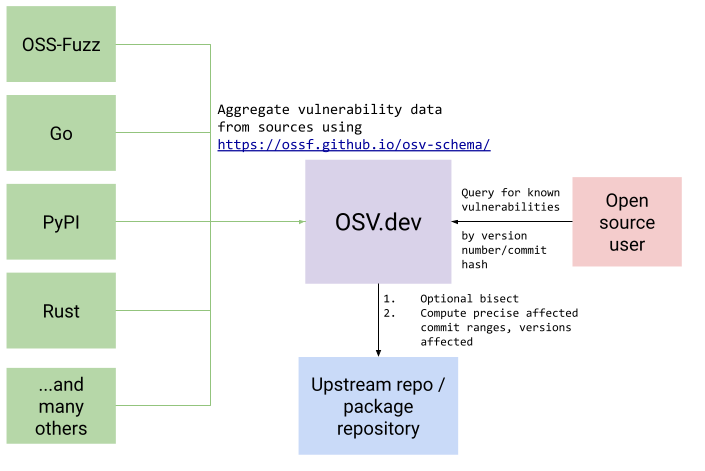
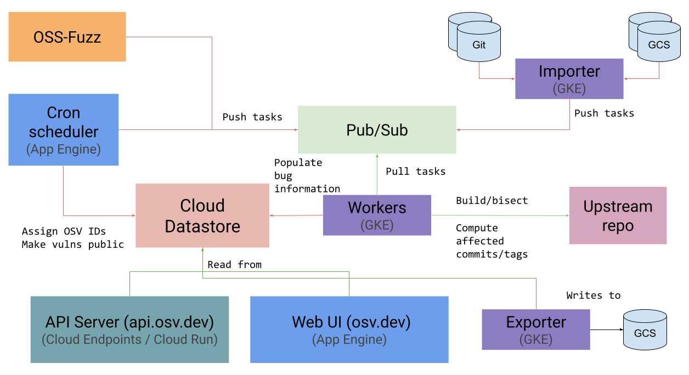

介绍
OSV 是 Open Source Security 团队的开源项目，目标是作为开源软件安全的一个基础架构平台。OSV 通过聚合各个软件生态下的漏洞数据，并统一成 OpenSSF Vulnerability Format 中定义的数据格式。该平台目前还提供免费的查询接口供开发者使用，并通过二分搜索和版本分析，保障查询结果的准确性。

漏洞数据源
目前有部分漏洞库，已经原生支持 OpenSSF Vulnerability Format 格式：
- GitHub Advisory Database (CC-BY 4.0)
- PyPI Advisory Database (CC-BY 4.0)
- Go Vulnerability Database (CC-BY 4.0)
- Rust Advisory Database (CC0 1.0)
- Global Security Database (CC0 1.0)
- OSS-Fuzz (CC-BY 4.0)
为了转换 Debian Security Advisories 和 Alpine SecDB 生态下的漏洞信息，OSV 还维护了对应的转换工具。截至目前，OSV 覆盖的软件生态很丰富，包括 Android、crates.io、Debian GNU/Linux、GitHub Actions、Go、Hex、Linux kernel、Maven 等
Dump
OSV 将聚合后的数据存放在 GCS 中 gs://osv-vulnerabilities，如果想 Dump OSV 聚合后的数据，可使用 gsutil 工具『可通过 pip install gsutil』进行下载，例如对于 Mavne 生态可通过下面的命令进行下载
# Or download over HTTP via https://osv-vulnerabilities.storage.googleapis.com/Maven/all.zip
gsutil cp gs://osv-vulnerabilities/Maven/all.zip .
可在 gs://osv-vulnerabilities.storage.googleapis.com/ecosystems.txt 查看可用的 Ecosystem。
架构

根据 Architecture | OSV 的介绍，OSV 服务部署在 Google Cloud Platform 上，包含以下组件：
- Cloud Datastore
- Google Kubernetes Engine (GKE)
- 通过 GKE 运行 Workers，Workers 从 Pub/Sub for Application & Data Integration | Google Cloud 中获取任务，并通过 The Container Security Platform | gVisor 提供容器保护
- Cloud Run / Cloud Endpoints
- API 接口服务则通过 Cloud Run: Container to production in seconds | Google Cloud 运行，并通过 Cloud Endpoints | Google Cloud 对外开放。
- App Engine
- App Engine 维持
osv.dev的 Web 服务，并通过定时任务给 Workers 下发任务『可能是重复的』，用于分配 OSV ID，并适时公布漏洞数据到 Datasource 中。
- App Engine 维持
使用
格式规范
{
"schema_version": "string",
"id": "string",
"modified": "string",
"published": "string",
"withdrawn": "string",
"aliases": [ "string" ],
"related": [ "string" ],
"summary": "string",
"details": "string",
"severity": [ {
"type": "string",
"score": "string"
} ],
"affected": [ {
"package": {
"ecosystem": "string",
"name": "string",
"purl": "string"
},
"ranges": [ {
"type": "string",
"repo": "string",
"events": [ {
"introduced": "string",
"fixed": "string",
"last_affected": "string",
"limit": "string"
} ],
"database_specific": { "see description" }
} ],
"versions": [ "string" ],
"ecosystem_specific": { "see description" },
"database_specific": { "see description" }
} ],
"references": [ {
"type": "string",
"url": "string"
} ],
"credits": [ {
"name": "string",
"contact": [ "string" ]
} ],
"database_specific": { "see description" }
}database_specific 字段由内部数据库定义并提供的额外数据对象，具体内容不固定。
示例
curl -X POST -d \
'{"version": "2.4.1",
"package": {"name": "jinja2", "ecosystem": "PyPI"}}' \
"https://api.osv.dev/v1/query"@startjson
{
"schema_version": "1.3.0",
"id": "GHSA-c3g4-w6cv-6v7h",
"modified": "2022-04-01T13:56:42Z",
"published": "2022-04-01T13:56:42Z",
"aliases": [ "CVE-2022-27651" ],
"summary": "Non-empty default inheritable capabilities for linux container in Buildah",
"details": "A bug was found in Buildah where containers were created ...",
"affected": [
{
"package": {
"ecosystem": "Go",
"name": "github.com/containers/buildah"
},
"ranges": [
{
"type": "SEMVER",
"events": [
{
"introduced": "0"
},
{
"fixed": "1.25.0"
}
]
}
]
}
],
"references": [
{
"type": "WEB",
"url": "https://github.com/containers/buildah/commit/..."
},
{
"type": "PACKAGE",
"url": "https://github.com/containers/buildah"
}
]
}
@endjsonOpenAPI 接口
API 接口一共有 3 个
https://api.osv.dev/v1/query- 查询单个
package的漏洞 - 请求参数格式如下，
commit、version + package.name + package.ecosystem或package.purl任选一种即可。
- 查询单个
{
"commit": "string",
"version": "string",
"package": {
"name": "string",
"ecosystem": "string",
"purl": "string"
}
}https://api.osv.dev/v1/querybatch- 同时查询多个
package的漏洞『一次请求最多1000个』，请求参数格式与前者相同，只是组合成数组的形式。此接口不会返回某个漏洞完整的 OSV 漏洞规范中定义的数据，而是主要返回OSV ID字段，因此需要配合下一个接口获取更详细的漏洞信息。
- 同时查询多个
https://api.osv.dev/v1/vulns/{id}- 根据
OSV的漏洞ID查询某个漏洞
- 根据